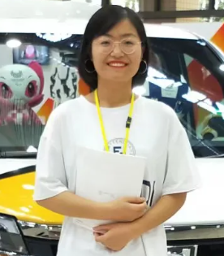
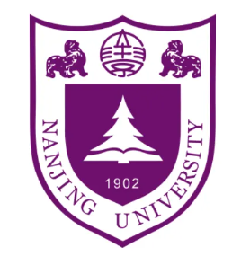
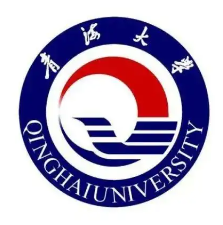

|  | Graduate student, |
I am currently an incoming master student in the Department of Computer Science and Technology of Nanjing University, where I am supervised by Prof. Wu-Jun Li.
|  | M. S., Nanjing University (NJU), Nanjing, Jinagsu [2022.9~]
|
|  | B. Sc, Qinghai University, Xining, Qinhai [2016.9 ~ 2020.7]
|
C Programming. (2017.09)
C++ Programming. (2018.03)
Excellent Scholarship (2016-2017, 2017-2018)
Merit Student (2016-2017)
JLPT N2(2019.01)
Software Name: Resource Sharing Platform V1.0,
Copyright Owner: Yuying Liu,
License Number: 2019SR0525451
Software Name: Laboratory Management System V1.0,
Copyright Owner: Qinghai University,
License Number: 2019SR0385212
Software Name: Python Source Code Plagiarism Detection System V1.0,
Copyright Owner: Qinghai University,
License Number: 2019SR0385203